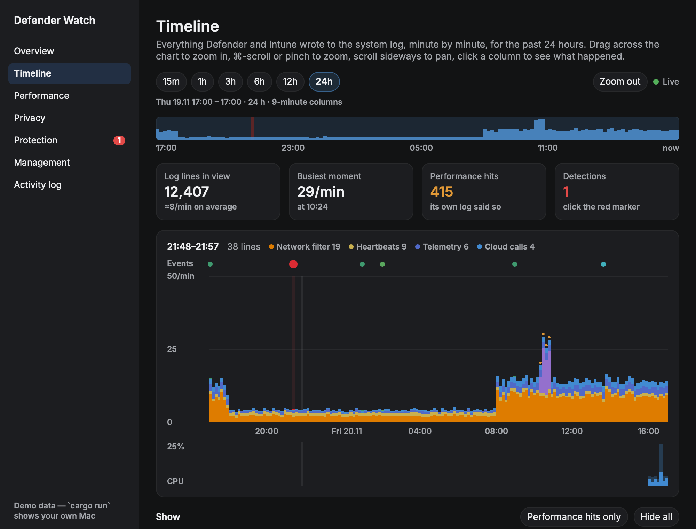
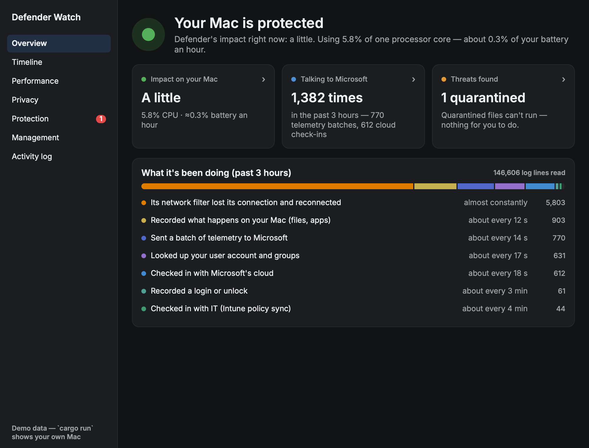
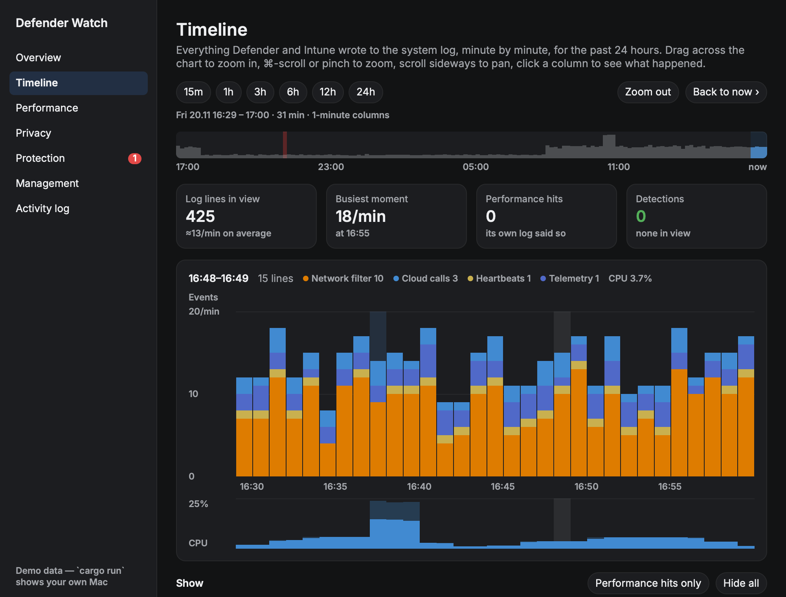
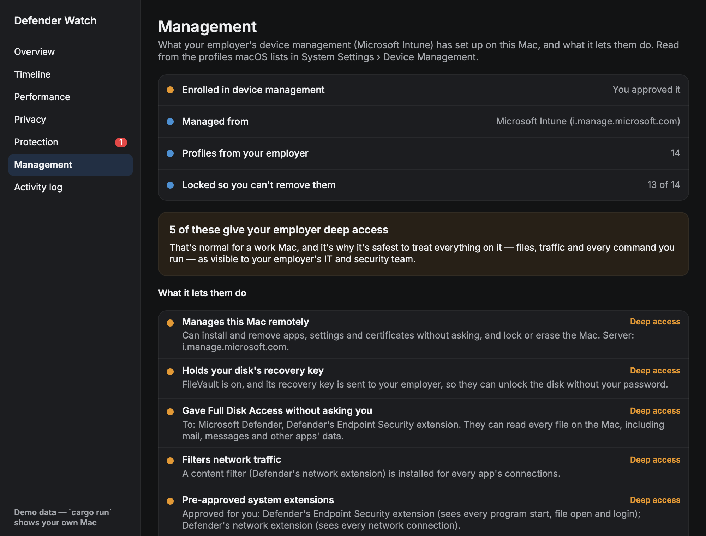
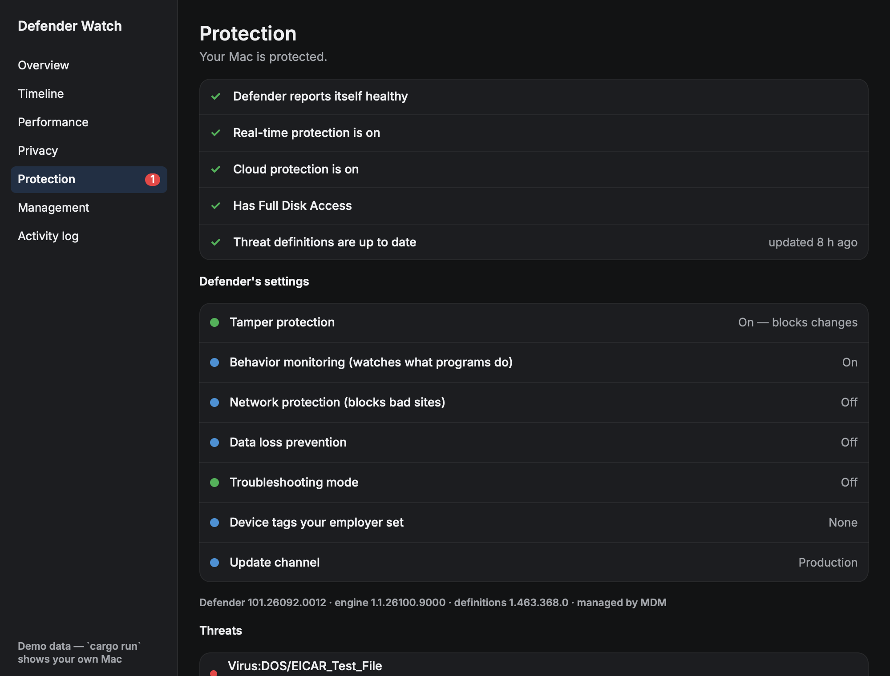

Defender Watch · for macOS
Hva gjør jobb-Macen din, og hva ser arbeidsgiveren?
Defender Watch viser hva Microsoft Defender for Endpoint og Intune gjør på Macen din: minutt for minutt det siste døgnet, hva det koster i CPU og batteri, hva som sendes til Microsoft, og hva arbeidsgiveren din kan gjøre med maskinen. Du får også varsel med en gang Defender reagerer på noe.

Hva det viser
Oversikt
Ett blikk: er Macen beskyttet, hvor mye Defender bruker av maskinen akkurat nå, hvor ofte den snakker med Microsoft, og om noe er funnet.
Tidslinje
De siste 24 timene, minutt for minutt: alt Defender og Intune skrev til systemloggen, stablet etter type, med CPU under og funn, skanninger, definisjonsoppdateringer og Intune-innsjekkinger som merker. Dra for å zoome, ⌘-scroll eller knip, filtrer på type, og klikk på en kolonne for å se de faktiske linjene og hvilken prosess som skrev dem.
Ytelse
Går Macen tregere? En dom med ett ord, CPU per Defender-prosess de siste minuttene, et anslag over hva det koster i batteri, og stedene der Defenders egen logg sier at den bremser.
Personvern
Hva Microsoft får vite: innsjekkinger mot skyen, telemetri-pakker, og regelen som bestemmer om mistenkelige filer kan lastes opp automatisk.
Beskyttelse
Funn, karantene og skanninger, slik
mdatprapporterer dem, pluss innstillingene: manipuleringsbeskyttelse, atferdsovervåking, nettverksbeskyttelse, DLP, enhetsmerker og oppdateringskanal. Atferdsfunn (Behavior:…) gjelder noe en kommando gjorde, og dashbordet sier rett ut at sikkerhetsteamet blir varslet.Administrasjon
Profilene Intune har installert, og hva de lar arbeidsgiveren gjøre, med vanlige ord: fjernstyre og slette Macen, holde gjenopprettingsnøkkelen til disken, gi full disktilgang uten å spørre deg, filtrere nettverkstrafikken, legge inn egne rotsertifikater og mer. Også hvor Defender rapporterer, og i hvilken dataregion.
Aktivitetslogg
Hver linje Defender og Intune skriver til systemloggen, etter hvert som den kommer.
Varsel med en gang
En bakgrunnsjobb sjekker Defender hvert 30. sekund. Ved nye funn får du et varsel og en dialog som blir stående, også når dashbordet er lukket. Pushover til telefonen hvis du vil. Slå det på.
Slik ser det ut




Installer
-
Den enkleste veien er Terminal. Da havner programmet i
~/.local/bin:curl -fsSL https://sjoenh.github.io/defender-watch/install.sh | sh -
Har du lastet ned med knappen over? Disk-bildet er signert og notarisert av Apple, med billetten stiftet på, så macOS åpner det uten advarsel, også uten nett. Dobbeltklikk
defender-watchi vinduet for å prøve, eller legg det i~/.local/binså det er der neste gang:hdiutil attach -quiet ~/Downloads/defender-watch-macos.dmg mkdir -p ~/.local/bin && cp "/Volumes/Defender Watch/defender-watch" ~/.local/bin/ hdiutil detach -quiet "/Volumes/Defender Watch" ~/.local/bin/defender-watch -
Få varsel med en gang Defender reagerer på noe, også når dashbordet er lukket. Dette legger inn en bakgrunnsjobb som sjekker hvert 30. sekund og viser et varsel som blir stående til du lukker det. Funnene som allerede finnes, blir ikke varslet.
--uninstall-notifyfjerner den igjen:defender-watch --install-notifyVil du ha varselet på telefonen også? Legg Pushover-nøklene i en fil som bare du kan lese. Nøklene skrives med
printf, så de havner aldri på en kommandolinje:mkdir -p ~/.config/defender-watch read -rs "PO_TOKEN?Pushover app token: "; echo read -rs "PO_USER?Pushover user key: "; echo (umask 077; printf 'form-string = "token=%s"\nform-string = "user=%s"\n' "$PO_TOKEN" "$PO_USER" > ~/.config/defender-watch/pushover.conf) -
Vil du bare se hvordan det ser ut, uten Defender på maskinen:
defender-watch --demo
Hva det kan og ikke kan se
Alt leses lokalt på Macen, uten administratortilgang: prosessdata, systemloggen (log show og log stream), mdatp, og profilene og innstillingene Intune har lagt inn (de samme som under Systeminnstillinger › Enhetsadministrasjon). Ingenting av det dashbordet viser forlater maskinen.
Et stille dashbord betyr ikke en stille dag. EDR-delen av Defender sender mer til arbeidsgiveren din enn den lokale loggen viser: hver prosess som starter, med hele kommandolinjen, i tillegg til fil-, innloggings- og nettverkshendelser.
Hemmeligheter som står på en kommandolinje blir altså registrert. Bruk curl -H @fil, curl --config - eller et skript som leser hemmeligheten selv.
Bruker du 1Password, kan .env-filen holde referanser i stedet for verdier (GITHUB_TOKEN=op://Privat/GitHub/token), og op run --env-file .env -- flyctl deploy gir programmet hemmeligheten i miljøet, ikke på kommandolinjen. Det virker for verktøy som leser tokenet selv, som gh, flyctl, docker og aws. Skriver du $TOKEN inn i en kommando, havner den likevel i loggen.
Bruker du AI-agenter i terminalen? Installer argv-guard
En agent som kjører kommandoer for deg, havner i den samme loggen som deg. Et token i agentens curl blir lagret hos arbeidsgiveren, og en kommando som ligner et angrep, utløser et varsel hos sikkerhetsteamet. argv-guard er laget for Claude Code foreløpig.
argv-guard er en hook som stopper kommandoer før de kjører hvis de ville lagt en hemmelighet på kommandolinjen ($TOKEN i curl -H, sshpass, passord i URL-er) eller ligner et reverse shell (/dev/tcp, nc -e, ssh -R). Agenten får beskjed om hvordan den kan skrive kommandoen trygt i stedet.
mkdir -p ~/.claude/hooks
curl -fsSL -o ~/.claude/hooks/argv-guard.py https://sjoenh.github.io/defender-watch/argv-guard.py
curl -fsSL -o ~/.claude/hooks/argv-guard-test.py https://sjoenh.github.io/defender-watch/argv-guard-test.py
python3 ~/.claude/hooks/argv-guard-test.pyLegg den så inn under hooks i ~/.claude/settings.json:
"PreToolUse": [
{
"matcher": "Bash",
"hooks": [{ "type": "command", "command": "python3 \"$HOME/.claude/hooks/argv-guard.py\"", "timeout": 5 }]
}
]